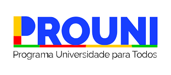

Bolsas do PROUNI para a Universidade PUC
O Programa Universidade para Todos (PROUNI) é uma iniciativa do governo federal brasileiro que visa democratizar o acesso ao ensino superior, oferecendo bolsas de estudo integrais (100%) e parciais (50%) para estudantes de baixa renda em instituições privadas de ensino superior . O programa é uma oportunidade para alunos que não possuem condições financeiras de arcar com as mensalidades, garantindo a inclusão educacional e social.
Objetivo do PROUNI na PUC
A Pontifícia Universidade Católica (PUC) é uma das instituições que participa do PROUNI, disponibilizando vagas para diversos cursos de graduação por meio do programa. O objetivo da parceria entre o PROUNI e a PUC é proporcionar aos estudantes de baixa renda acesso a uma formação de alta qualidade, em uma das universidades mais renomadas do Brasil.
Os alunos que ingressam na PUC pelo PROUNI têm os mesmos direitos e devem ter os demais estudantes, contando com uma estrutura acadêmica de excelência, corpo docente qualificado e uma ampla gama de recursos para o desenvolvimento profissional e pessoal.
A PUC valoriza a inclusão e acredita que o PROUNI é uma ferramenta essencial para formar profissionais competentes, éticos e comprometidos com a sociedade.
Como se Inscrever no PROUNI para a PUC
1.Verifique os requisitos do PROUNI:
→ Ter participado da edição mais recente do ENEM e obter uma nota mínima de 450 pontos na média das provas, além de nota maior que zero na redação.
Atender aos critérios de renda:
→ Bolsa integral (100%): renda familiar bruta mensal per capita de até 1,5 salário mínimo.
→ Bolsa parcial (50%): renda familiar bruta mensal per capita de até 3 intervalos mínimos.
→ Ter cursado o ensino médio em escola pública ou como bolsista integral em escola particular.
2.Consulte os cursos disponíveis:
→ Consulte o site oficial do PROUNI ou da PUC para verificar quais cursos estão disponíveis para o programa.
3.Faça a inscrição no PROUNI:
→ Acesse o portal oficial do PROUNI ( prouniportal .mec .gov .br ) durante o período de inscrições.
→ Escolha a PUC como sua instituição desejada e indique o curso de interesse.
4.Acompanhe o processo seletivo :
→ Após a inscrição, acompanhe os resultados e, caso seja pré-selecionado, envie a documentação pertinente para comprovar as informações fornecidas.
Apresente os documentos solicitados diretamente à PUC e finalize o processo de matrícula para garantir sua vaga.
O PROUNI é uma oportunidade única para estudantes que sonham em ingressar em uma universidade como a PUC, reconhecida por sua excelência acadêmica e infraestrutura de qualidade. Planeje-se, fique atento aos prazos e organize os documentos necessários para aproveitar essa chance de construir uma futura promessa com o apoio do programa.
Se ainda restar alguma dúvida, consulte a central de atendimento do FIES ou entre em contato diretamente com a PUC para obter mais informações!